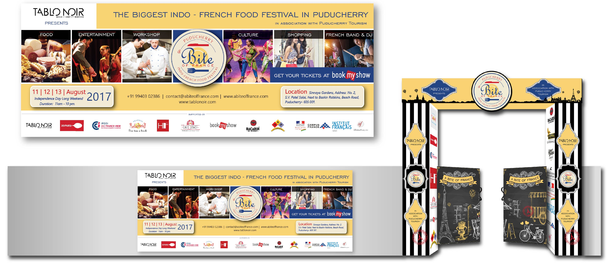
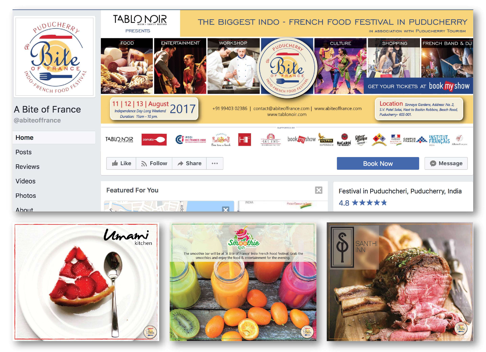

Graphic Design, A Bite of France - Collateral
Collaborative project as part of the Tablo Noir Design Team
A Bite of France was a food festival conducted by our design firm, Tablo
Noir, in collaboration with Pondicherry tourism. The design team was responsible for creating
collaterals for the event and taking care of promoting it online and via print mediums.
Tools: Illustrator, Affinity Photo
Print Collateral
A horizontal banner for print on the wall outside the gate of the venue was created to advertise the event. The same was also made use of for the banners on social media sites.
Identity cards for organisers and posters to guide the people for the event were also created.
Social Media Marketing
Social media marketing was done as well on facebook and instagram to promote the event. Promotions for the restaurants who would put up stalls was also done by us.
